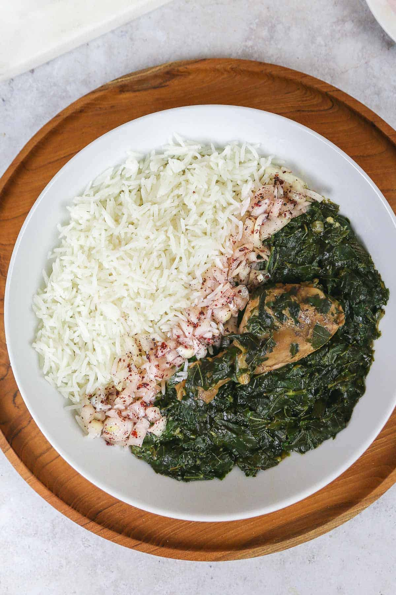

How To Make Malookhia That's Better Than YO NANA'S!

Malookhia Stew
This dish is a chicken stock based stew made using the malookhia leaf and chicken, but can also be made vegetarian. I do not recommend using beef or lamb for this recipe!
Best served with rice and top with vinegar soaked onion to add a sharp flavor; this dish will sooth any soul and make make you whole!
Ingredients
- Olive Oil
- Malookhia Leaf
- Chicken
- Onion atop onion atop onion
- Vinegar
- Beef Stock or Water
- Rice
- Salt
- Peppermint extract for your significant other!
- Your Appetite!
Steps
- Cook chicken ahead of time and set aside.
- In a large pot, heat oil over medium heat.
- Add chopped onion and simmer for a few minutes until aromatic.
- Turn heat to medium high. Add stock or water and bring to boil.
- Add frozen malookhia and mix well. Allow block to melt.
- Let simmer for at least 30 minutes. Add a vinegar to eliminate malookhia sliminess! Add meat and salt.
- Taste and adjust seasonings.
- Simmer until aromatic. Malookhia will be thick and rich.
- Serve in a separate bowl and add on top of rice.
- Add onion and vinegar mixture as desired.
- Enjoy!